erplots draws exposure-response plots from any model that
implements [er_model_interface]. This article uses a logistic regression
model fitted with erglm, but the plotting code itself has no knowledge
of glm(). It’s the most detailed of the three response-type
articles (binary/continuous/count); the continuous and count articles
link back here for the model and group components, which work
identically regardless of response type.
Fit the model first
Unlike a plotting function that fits a model behind the scenes, erplots expects you to fit the model yourself and pass it in explicitly:
mod <- erglm_model(ae1 ~ aucss, erglm_data, family = binomial())Defining plots
Basic usage
erglm_data |>
er_plot(exposure = aucss, response = ae1) |>
er_plot_show_model(mod) |>
er_plot_show_quantiles() |>
plot()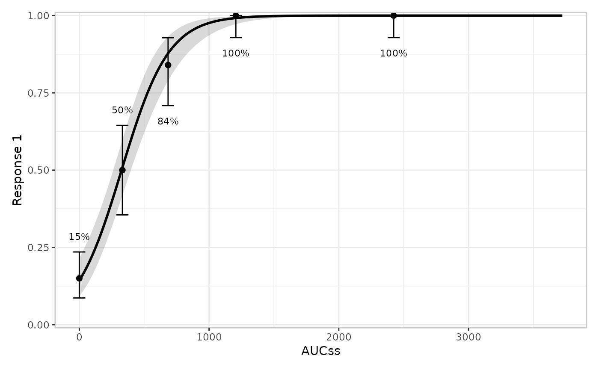
Adding extra components
erglm_data |>
er_plot(exposure = aucss, response = ae1) |>
er_plot_show_model(mod) |>
er_plot_show_quantiles() |>
er_plot_show_data() |>
er_plot_show_groups(group_by = aucss) |>
plot()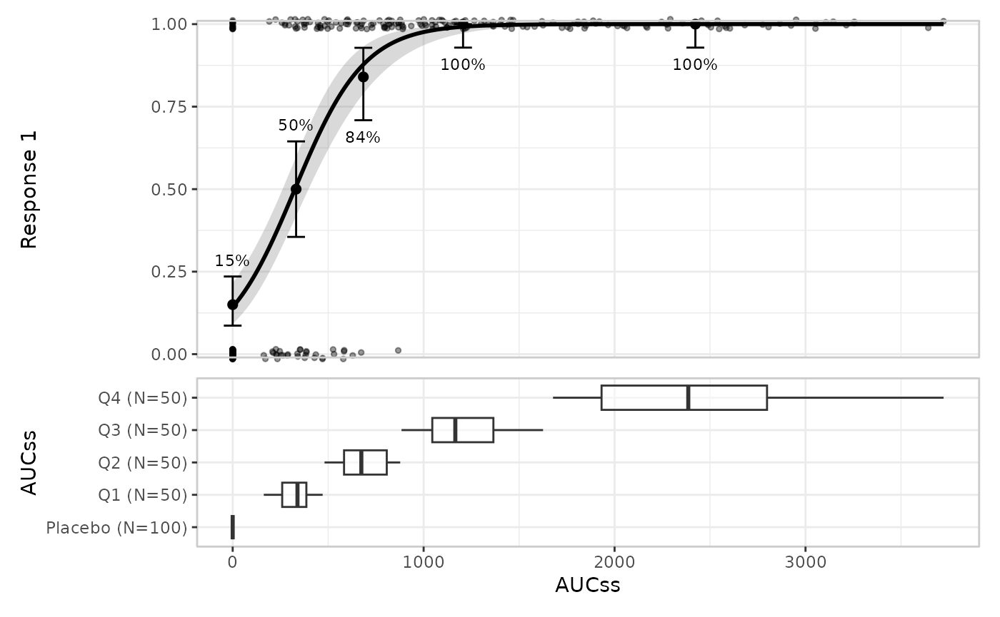
Stratification
Stratification adds colour across all components. This requires a model that includes the stratification variable as a term:
mod_strat <- erglm_model(ae1 ~ aucss + sex, erglm_data, family = binomial())
erglm_data |>
er_plot(
exposure = aucss,
response = ae1,
stratify_by = sex
) |>
er_plot_show_model(mod_strat) |>
er_plot_show_quantiles() |>
er_plot_show_data() |>
plot()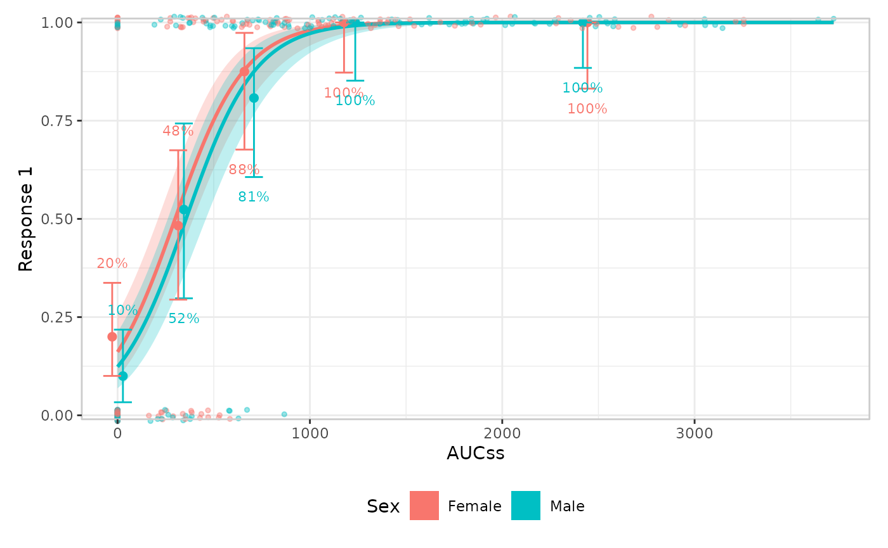
You can suppress stratification for specific components
erglm_data |>
er_plot(
exposure = aucss,
response = ae1,
stratify_by = sex
) |>
# keep_strata = FALSE needs a model that doesn't include the
# stratification variable, so we pass the un-stratified `mod` here
er_plot_show_model(mod, keep_strata = FALSE) |>
er_plot_show_quantiles() |>
er_plot_show_data() |>
plot()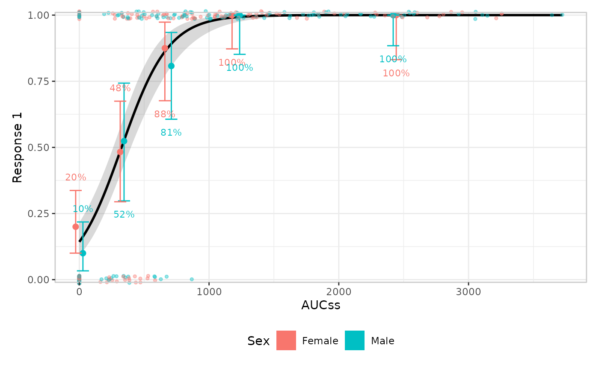
Model component
The default builder is build_model_ribbonline(), but you
can also draw spaghetti plots to represent parameter uncertainty with
build_model_spaghetti(). Spaghetti plots require the model
to implement er_simulate() (erglm’s models do); models that
only implement er_predict() fall back to
build_model_ribbonline() with a message. This layer doesn’t
look at response_type at all – it only consumes
[er_predict()]/[er_simulate()] output – so everything in this section
applies unchanged to continuous and count responses too.
erglm_data |>
er_plot(aucss, ae1) |>
er_plot_show_model(mod, builder = build_model_spaghetti) |>
er_plot_show_quantiles() |>
plot()
#> Using seed = 3244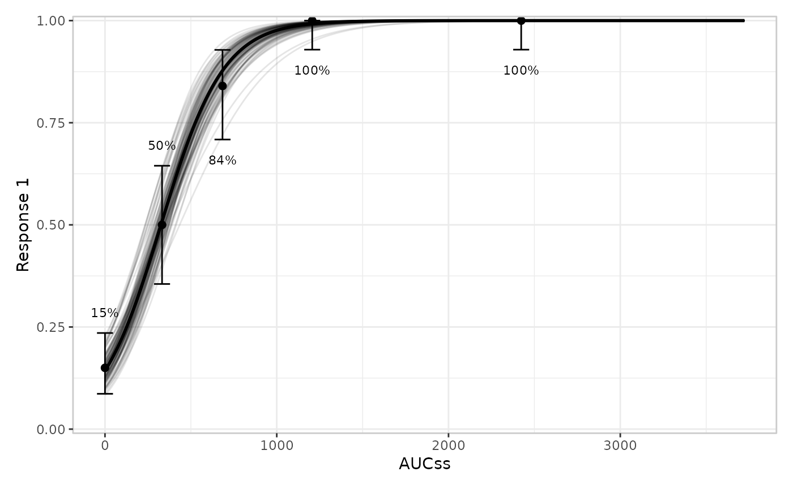
Quantile component
You can modify the number of bins:
erglm_data |>
er_plot(aucss, ae1) |>
er_plot_show_model(mod) |>
er_plot_show_quantiles(bins = 6) |>
plot()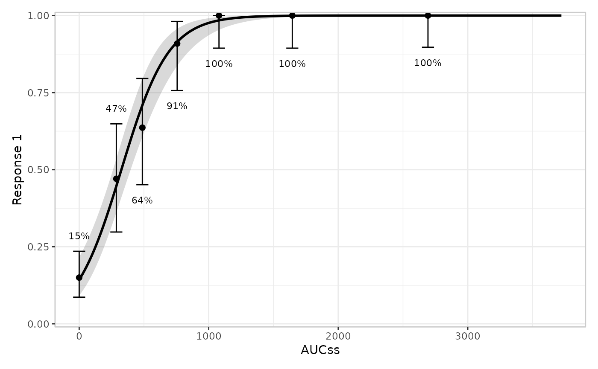
You can also modify the confidence level for the interval around each bin’s summary. For a binary response this is a Clopper-Pearson interval for the response rate; see the continuous and count articles for how this layer adapts its summary statistic and interval method to those response types.
erglm_data |>
er_plot(aucss, ae1) |>
er_plot_show_model(mod) |>
er_plot_show_quantiles(bins = 6, conf_level = .8) |>
plot()Data component
er_plot_show_data() adds the raw observations. By
default (build_data_overlay()), points are drawn at their
true (exposure, response) coordinates in the main
model panel – for a binary response this is a scatter with a small
vertical jitter, since the y-values are exactly 0/1 and would otherwise
overplot into two solid lines:
erglm_data |>
er_plot(aucss, ae1) |>
er_plot_show_model(mod) |>
er_plot_show_quantiles() |>
er_plot_show_data() |>
plot()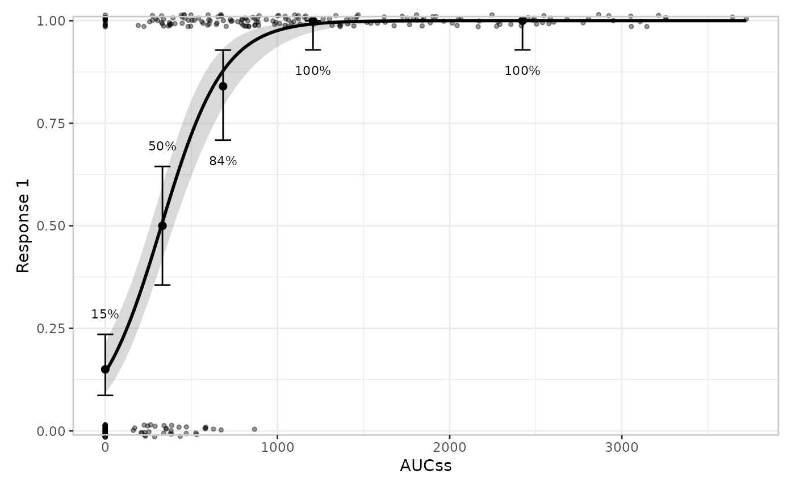
build_data_overlay()
vs. build_data_boxjitter()
build_data_boxjitter() is the older, panel-based design,
and is binary-response only: it splits responders/non-responders into
separate panels above/below the main plot, each showing a boxplot of the
exposure values with the raw jittered points layered on top – so the
panel shows the exposure distribution conditional on response,
not just individual points. There is no built-in panel-based builder for
a continuous/count response; build_data_overlay() (raw
points at their true (exposure, response) coordinates,
shown in the continuous and count articles) covers that
case there, and a custom "panel"-layout builder (e.g. a
single color-encoded panel) remains possible via [er_layout()] if a
project needs one – see vignettes/articles/design.Rmd’s
“Extending erplots” section. Each builder declares which of the two
structural families it belongs to via [er_layout()], which is what
er_plot_show_data() uses to decide whether to merge it into
the main panel or stack it in panels below.
Building both side by side (via patchwork’s | operator)
makes the difference concrete:
p_overlay <- erglm_data |>
er_plot(aucss, ae1) |>
er_plot_show_model(mod) |>
er_plot_show_quantiles() |>
er_plot_show_data() |>
er_plot_build()
p_boxjitter <- erglm_data |>
er_plot(aucss, ae1) |>
er_plot_show_model(mod) |>
er_plot_show_quantiles() |>
er_plot_show_data(builder = build_data_boxjitter) |>
er_plot_build()
p_overlay$output | p_boxjitter$output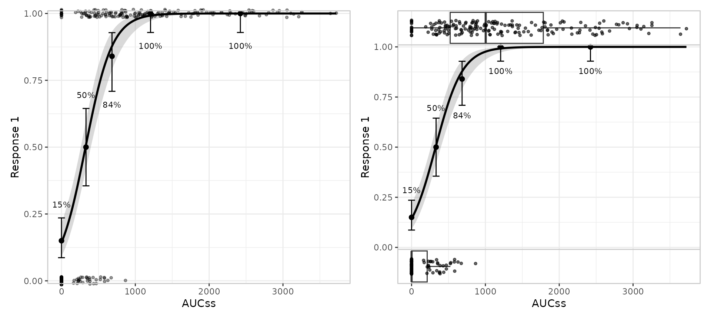
Stratification looks the same for both: color/fill always means
strata for build_data_boxjitter(), sharing the model
curve’s own legend, the same way build_data_overlay()’s
color aesthetic does for any response type:
p_overlay_strat <- erglm_data |>
er_plot(aucss, ae1, stratify_by = sex) |>
er_plot_show_model(mod_strat) |>
er_plot_show_data() |>
er_plot_build()
p_boxjitter_strat <- erglm_data |>
er_plot(aucss, ae1, stratify_by = sex) |>
er_plot_show_model(mod_strat) |>
er_plot_show_data(builder = build_data_boxjitter) |>
er_plot_build()
p_overlay_strat$output | p_boxjitter_strat$output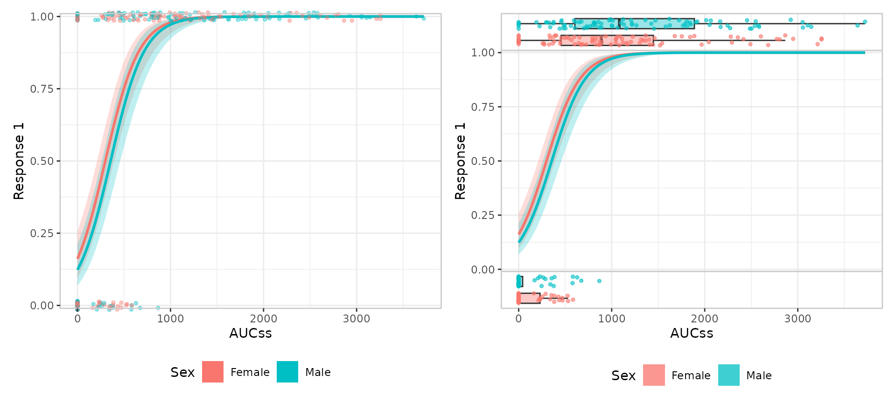
Group component
Multiple grouping variables are allowed. Like the model component,
this layer doesn’t look at response_type at all – it only
consumes the exposure variable – so everything in this section applies
unchanged to continuous and count responses too.
erglm_data |>
er_plot(aucss, ae1) |>
er_plot_show_model(mod) |>
er_plot_show_quantiles() |>
er_plot_show_groups(group_by = c(aucss, sex)) |>
plot()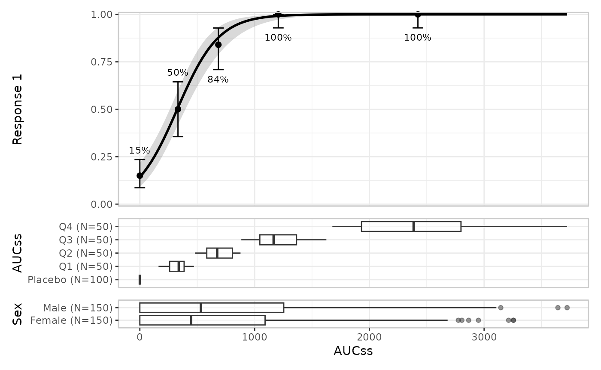
Stratification propagates to the group component:
erglm_data |>
er_plot(aucss, ae1, stratify_by = sex) |>
er_plot_show_model(mod_strat) |>
er_plot_show_quantiles() |>
er_plot_show_groups(group_by = aucss) |>
plot()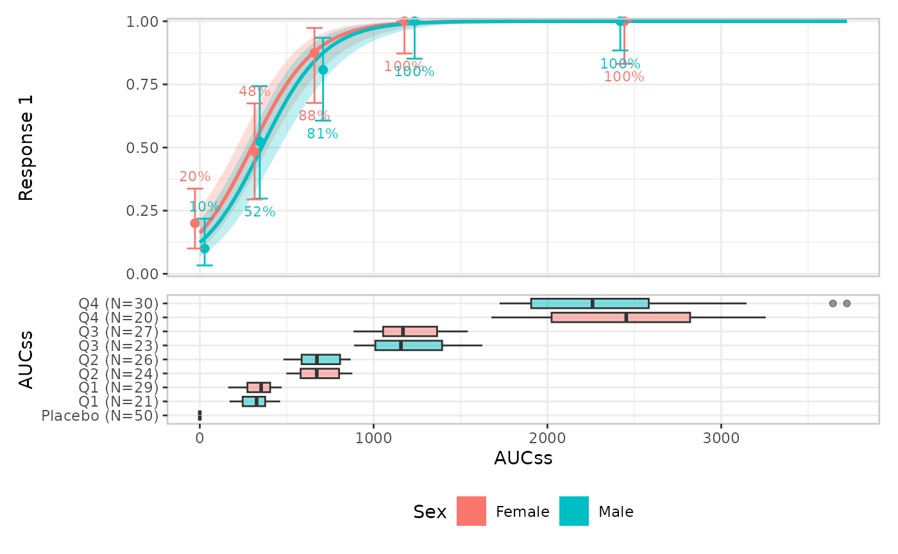
The default builder is build_group_boxplot(), but you
can also use violin plots with build_group_violin():
erglm_data |>
er_plot(aucss, ae1) |>
er_plot_show_model(mod) |>
er_plot_show_quantiles() |>
er_plot_show_groups(group_by = sex, builder = build_group_violin) |>
plot()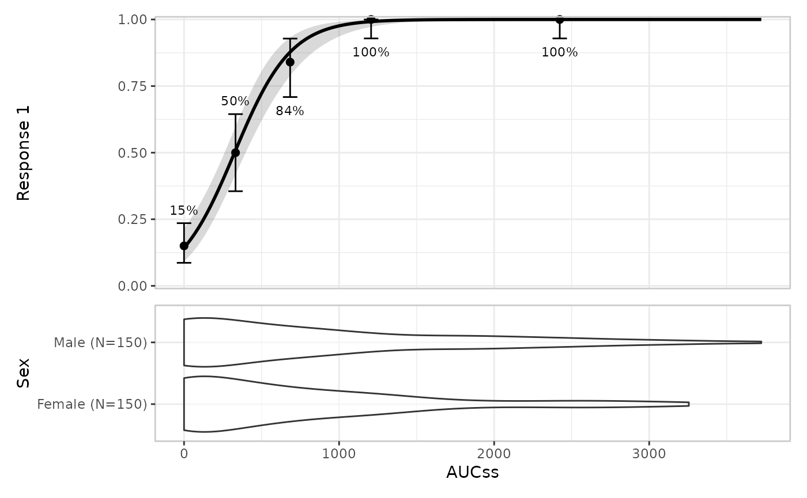
VPC plot
er_vpc_plot() is a model-agnostic VPC-style plot that
compares observed data against model-simulated data, operating on plain
data frames rather than an er_plot object. For a binary
response it compares observed vs. simulated response rates:
sim_binary <- erglm_vpc_sim(mod, seed = 5218)
er_vpc_plot(erglm_data, sim_binary, aucss, ae1, group_by = aucss)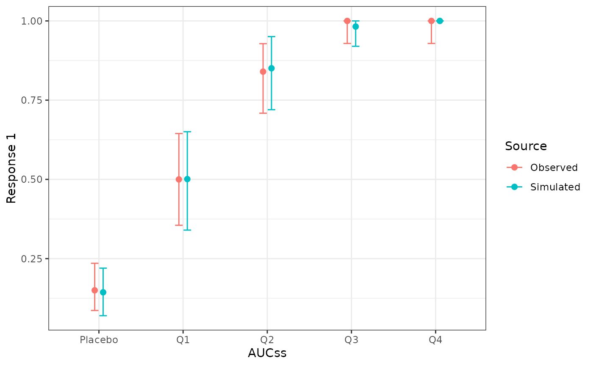
See the continuous and count articles for how this generalises to means (with a t-interval or exact Poisson interval, respectively) for those response types.